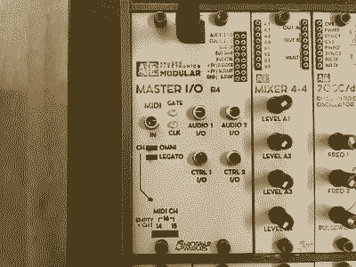

AE Modular
AE Modular is a product line of modular synths from Tangible Waves. It differs from eurorack and follows it's own set of standards for parts that reduce cost. Most notably, it's a patch wire system instead of the cables with jacks interface found on eurorack and elsewhere.
This is my first synth device besides 2 pocket operators. The starter kit arrived completely assembled and with a helpful getting started pamphlet.
The information presented below are my notes, as I investigate what each of the modules do and how to use them.There are some aspects to AE Modular which are global to all modules. For example there are two columns of patch wire jacks on the top of each module, the left side is inputs and the right side is outputs. Some modules provide "mult" for splitting a single signal into a few wires.
The Modules
I'm writing about the modules I currently own, there are many others. There are also official AE Modular references sites, such as the wiki and forum.
- Master I/O
- 2OSC
- VCO
- LFO
- 2VCA
- 2ENV
- ...
master-io
This is the original starter module, it used to be required for all AE Modular setups, but there is now also a smaller alternate power module that can be used. A 9 volt power supply (wall wart) is provided with the starter kit, and it plugs directly into the top of this module. This module includes patch wire inputs for the bus signals (also derived from MIDI input) which are shared through the ribbon cable underneath to other modules, as well as 3.5mm mini jacks for MIDI in, two audio in/out and two control voltage in/out.
There are 2 LEDs to indicate incoming gate and clock MIDI signals. The MIDI options are for either "omni" or specific channel choices. By default the MIDI channel is 1, but 14, 15, or 16 can be used instead. I haven't tested it, so I'm not sure what the legato mode does.